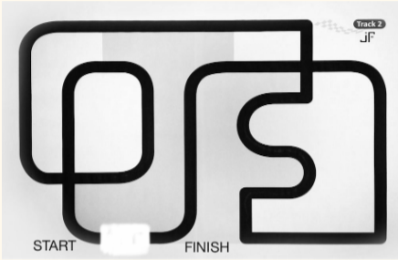
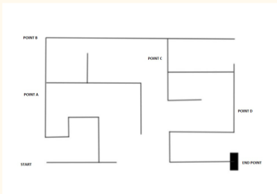
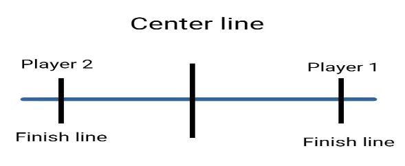

Want to take part in a fun BOT competition without having to make a BOT? Want to take part in a BOT competition without having to prep yourself? Just take part in these competitions and have the best time you can imagine…
One of the member of the team should control bot without seeing the arena and the other member should give guidelines accordingly. The arena specifications will be given on spot.
Requirements : Only two members per team.
A wire loop game is a game which involves guiding a metal loop (a 'probe') along a serpentine length of wire without touching the loop to the wire. The loop and wire are connected to a power source in such a way that, if they touch, they form a closed electric circuit. The circuit is connected to a light or sound-emitting device of some sort, so that when the loop and the wire touch, the light-emitting device will light up, and the sound-emitting device will make a sound, traditionally a buzzing noise.
IDEATE… CREATE …. INNOVATE
If you think you are SMART, CREATIVE and out of the box THINKER ,
then
you cannot miss this event.
Full of FUN and ADVENTURE, We can promise you a different innovative
challenge for botists out there…
Prepare best-designed Robot using scrap found in campus binding the rules and regulations Resource optimization is what it takes to convert seemingly useless ‘JUNK’ into a working/ non-working mechanism. Put years of accumulated equations and theories to create the most INNOVATIVE model. Make your ancestors proud by scavenging and foraging for parts as you face-off against your opponents in the ultimate war- THE JUNKYARD WARS.
| Uniqueness/Innovativeness |
| Design |
| Novelty |
| Sturdiness |
| Purpose |
First prize : 1500
Second Prize : 1000
Level 1: A line follower bot has to be built such a
way it traverse the path quickest
Level 2: The bot has to find and traverse in the
correct path.


1000+(100-t)*5, Where ‘t’ is time required to complete the track in seconds. Max time allowed is 100 secs. After that you will lose 5 points per extra second. If you finish it before 100 seconds, 5 points per second will be awarded as Bonus.
Point A (100) + Point B (200) + Point C (300) + Point D (400)+ Endpoint (500)+(600-t), where ‘t’ is time required to complete the track in seconds. Max time allowed is 10 min.
If the bot topples or loses control in the middle of track, a reset at the previous track point is done with a loss of points(manually).
| First Reset | -40 |
| Second Reset | -80 |
| Third Reset | -160 |
| And so forth | ... |
Register
The robot should be capable of performing both the following tasks.
The two bots in the arena are suppose to pull a knot towards themself, made at the center of the rope, which is tied to the frame of the chase of the bot. A line will be present on the floor as centerline and two other finish line(one for each player) 20 cm apart on either side from center line

Two Robots in arena attempting to push the other out of a circle. The Bot who pushes the other out of circle will be the winner.
Tug of War
Robo Sumo
Tug of War
Robo Sumo
Register